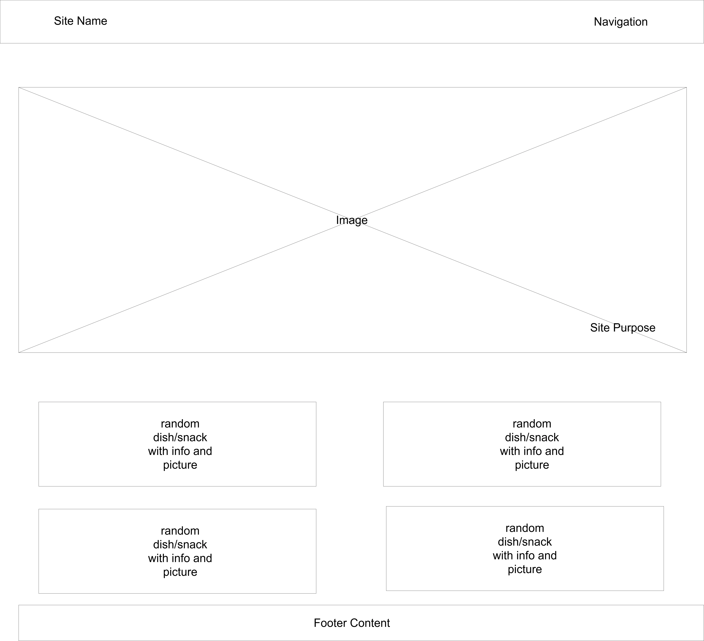
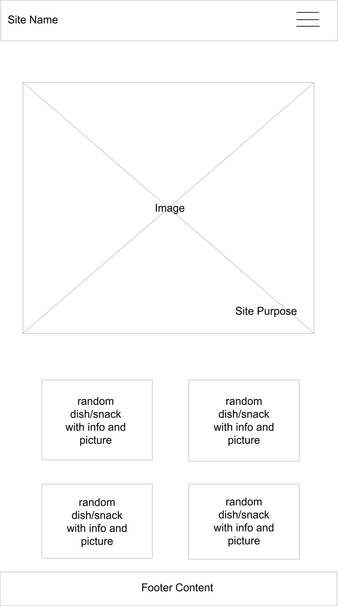

Filipino Cuisine 101
This site name is simply introducing basic knowledge about Filipino cuisines. "101" is a slang term used for any beginner-level subjects without any prior knowledge or expreience required.
Site Purpose
This website will showcase Filipino cuisines from across the Philippines, helping people from around the world know how to cook and prepare delicious dishes and snacks of the country.
Scenarios
What are some traditional dishes/snacks that are made only in the Philippines?
If I visit the Philippines, what food is a "must-try"?
Color Scheme
Header & Footer: Aegean Teal
Font-color: Hale Navy
Background-color: Gray Owl
Typography
Logo & Headings: Dancing Script
Body: Lora
Wireframes
Desktop View

Mobile View
